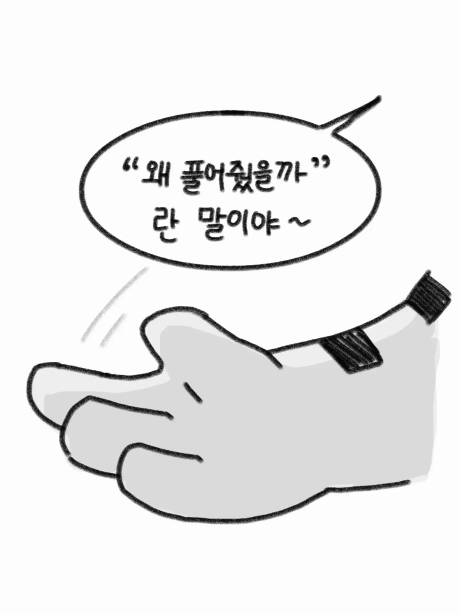
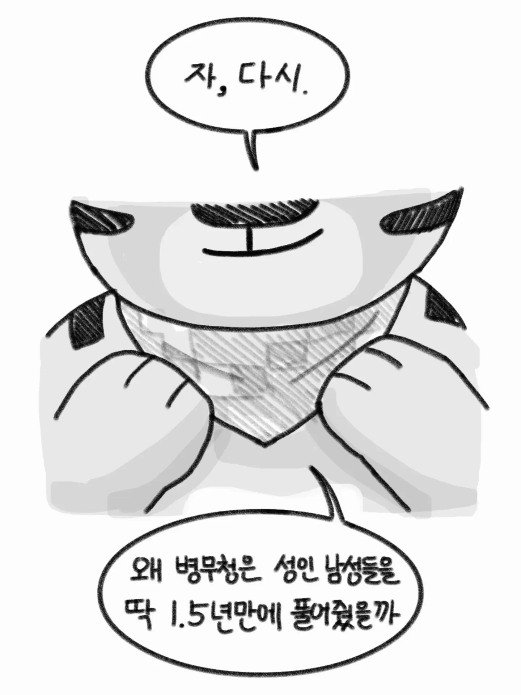
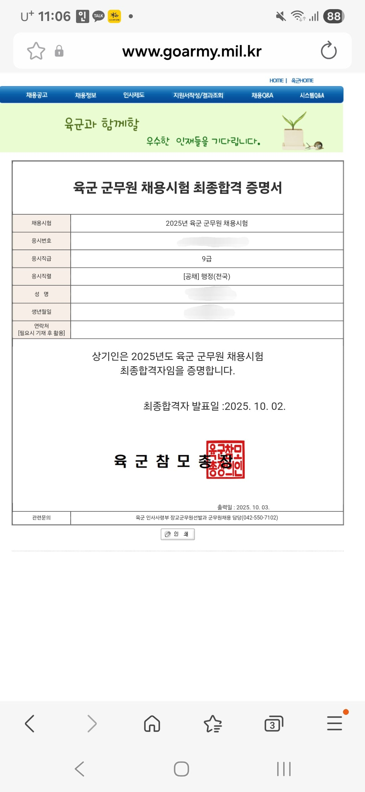

내가 4년차 굶무원이 돼가다니
육?해?공?
육
시골에처박고 관사안주는건 진짜너무하던데ㅜㅠ
난 운좋게 얻어 다녀서 다행이라 생각중
서울 근처라도 숙소 턱없이 부족하면 월세내고 다니더라
화이팅!ㅠㅠ 고생한다
쉬었음 청년인 내가 뭘할수있는지 똑똑히 봐라

우린 다 알면서도 애국했어요
니들도 그럴 수 있을까?
내가! 내가 국방부의 개야 개! 왈왈! 나라도 잘 지켜!
수집하기 만만한 통계는 아니겠지만 그냥 못버텨서 나간건지, 위로 점프해서 나간건지 볼 수 있음 좋겠다
레볼루숑이 필요하긴 함.
윗대가리들 알빠노하고, 나라와 국민을 위해 일하는 분들 빨대취급해도 가만히 있으니까
돌고돌아 다시 ㅋㅋ
군무원도 10년하면 괜창ㅎ지않음?
공군 군무원이면 오히려 동사무소에서 민원업무 보는 공무원들보다 낫지
평생 민원에 시달릴 일 없이 자기 일만 하면 되거든
육군은 진짜 처참하고 공군이나 국직가야됨
아는형은 육군에서 공군, 공군에서 국직가고, 국직에서 금융 공기업으로 이직했더라고
너무 수직상승인데
2년마다 계속 이직했더라고 무경력을 육군에서 채워서 경력채용으로 계속 옮긴거같음
군무원이 레전드인게 요즘은 훈련 당직에도 다 끌고간다더만
만화 잘만들었네 ㅋㅋ
우리부대 군무원들은 애매한 군인들보다 일도 적고 돈도 돈대로 받았었는데 부바부가 심한가??
내가 이렇게 싹싹 빌게!!!